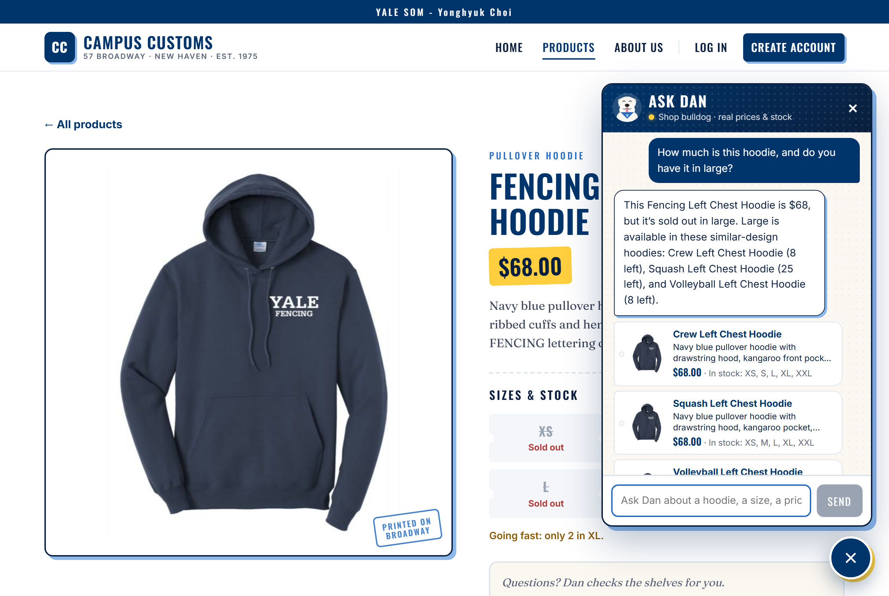
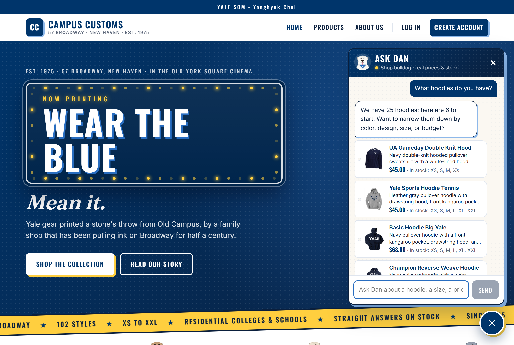
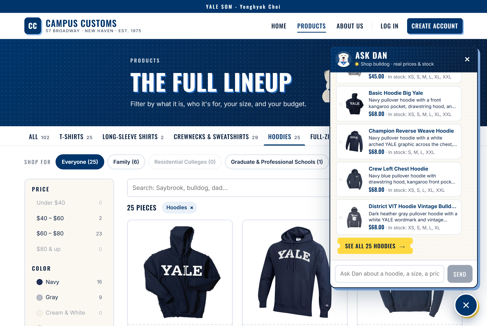
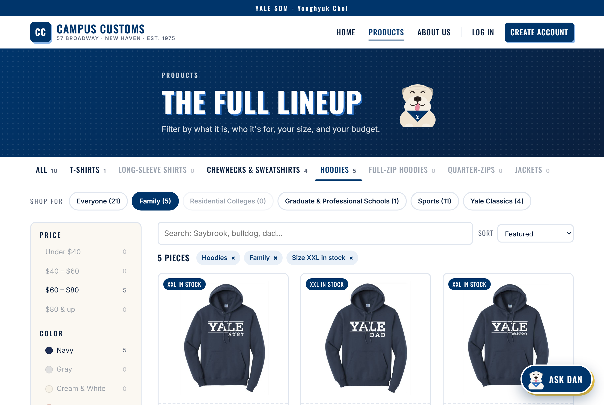

Three checks of the running website (React + Vite front end, FastAPI + PydanticAI back end,
model gpt-6-luna via Portkey). Screenshots were taken in a guest session on
2026-10-06, and every price and stock number shown was compared with
data/campus_customs.db before the screenshot was kept.
Check 1
Chat answers with the real price and stock — including "sold out"

On the Fencing Left Chest Hoodie page, the shopper asks "How much is this hoodie, and do you have it in large?".
Ask Dan gives the database price ($68), says plainly that large is sold out, and offers three similar
hoodies that do have large in stock, with how many are left and product cards.
Database check: price $68.00; size L quantity 0 (also XS and XXL 0).
Alternatives in L: Crew Left Chest Hoodie 8, Squash Left Chest Hoodie 25, Volleyball Left Chest Hoodie 8.
All match the answer.
Check 2
Category search in chat shows dynamic product cards

Asking "What hoodies do you have?" makes the agent search the catalogue and return matching hoodies as
clickable cards (photo, name, short description, price, sizes in stock), built from the database at the moment of the answer.

The answer ends with a "See all 25 hoodies" ticket; clicking it opens the Products page with the Hoodies
filter applied, and the page shows the same 25 pieces the chat promised.
Database check: the catalogue has 25 hoodies (full-zip hoodies are a separate category); the chat says 25, the link says 25, and the page header shows "25 pieces".
Check 3
Usability feature: category tabs, "Shop for" collections and filters

The Products page combines a category tab (Hoodies), a "Shop for" collection (Family) and the
"My size is in stock" filter (XXL): 5 pieces remain, each badged "XXL in stock", with removable filter chips and live counts on every option.
Database check: family hoodies with XXL quantity > 0 are exactly Yale Aunt, Dad, Grandma, Grandpa and Mom Hoodie (5),
the same five the page shows. URL: /products?collection=family&category=hoodies&size=XXL.